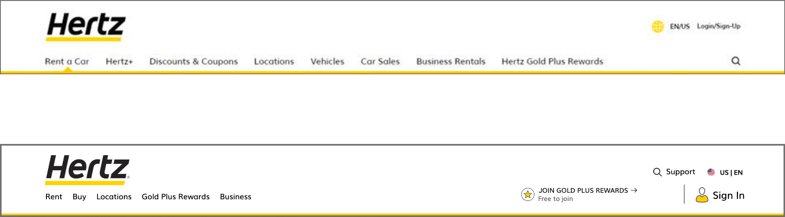

Hertz Digital Transformation

Project Summary
In order to keep up with technology, expectations, and competition in the marketplace, the Hertz.com Digital Transformation endeavored to unify the disconnected legacy platforms and redesign the Hertz digital experience. The project used an agile release process to deploy different sections of the website in order to launch more quickly and facilitate customer feedback/customer-focused development. As one of the Content Leads, my role was to help migrate the 2,000+ pages (not including translations) onto an up-to-date CMS platform, ensuring the content was brand approved and SEO optimized. A project of this scale required input from many different departments. I collaborated with the IBM development, UX, and Marketing teams on a day-to-day basis.
Team Members & Collaborators
IBM Garage, UX, Loyalty, Analytics team, and Marketing Stakeholders
Tools
Photoshop, Adobe XD, Adobe Experience Manager, Excel
Analysis
During the planning phase, I helped reorganize, rewrite, and restructure the content moving from the old site to the new site. One of my responsibilities was to log and keep track of the pages that would be migrated, 301 redirected, and rewritten for SEO optimization.
Content Restructuring
Over the years, the legacy website had racked up a huge number of pages, many of which were old and outdated with irrelevant content. In order to keep track of all the pages, we used Gather Content to organize sections of the site into different “buckets”, (e.g. Location, Special Offer, Marketing Landing Pages). Google Analytics was a good starting point to know which pages to include in the migration:
- Pages with high amounts of traffic were automatically included in the migration because they were either valuable to our customers or valuable to our marketing efforts.
- Evergreen pages (content that is always relevant) or pages the company deemed essential (like FAQs, Partner pages, or pages required by Legal) were also important.
- Pages with high bounce rates were reviewed for content restructuring and rewrites to be done by our SEO agency.
- Pages with low amounts of traffic were reviewed for 301 redirects.
We then went through each of the buckets with the appropriate stakeholders and our SEO agency to see which ones we needed to keep, restructure, and remove. We also reviewed the content to determine if it was still relevant and whether or not the content still matched the voice of the brand.
Customer Personas
While we knew we had a lot of customers that rented for business travel, the company also did a brand positioning workshop to help identify high-growth target prospects and customer personas. Our three high growth targets were identified as:
Bells and Whistles Leisure Travelers
Priority Needs:
- Make memories
- Relieve stress/ feel revitalized
Young College Educated Travelers
Priority Needs:
- Feel like an expert
- No waste (time/money)
- Get something extra
“Earn From the Road” Delivery Drivers
Priority Needs:
- Reliability
It was important for our team not only to position existing content to align with these persona’s needs, but also develop new content ideas and assets that would help catch their attention and move them closer to renting a vehicle. As a few actions from these findings, we gave our young driver page a content refresh, optimized for SEO, and added banners on the homepage targeted towards young drivers.
Plan
To stay on top of tight timelines, our team loaded “base” content (text and imagery that we took from the legacy site that was used as a starting point for the new site) into the new CMS platform. We prioritized content that would display in the reservation flow as this was the first section to be released.
Design & Development
Throughout the process our team worked side-by-side with the UX and design teams to establish content as a foundational starting point for the planning, design, and development phases and to make sure the end solution met business requirements.
Jira and Confluence were used to keep track of all the work that went into the weekly sprints. The PO’s re-prioritized the backlog every week in order to focus on impactful project work. The picture below is representational of the different workstreams.
Strategy & Implementation
| 1 |
Shared CMS |
|
The Hertz corporation was a family of three car rental brands:
Hertz, Dollar, and Thrifty. While the first phase was focused on
migrating the Hertz website, the plan was to have a single content management source
for all three brands.
The developers would reutilize the code base and develop a a common core library, a
list of shared features and components,
giving us a leg up on the other Brand's transformations while reducing
development costs.
|
| 2 |
Global Scalability |
|
We planned to roll out the website to different regions and dialects in an iterative fashion. With hertz.com serving customers in over 150 countries, each source market would have content provided in English (US English or UK English) and many would have their region’s local dialect as well. In total, we had to plan and prep content to support 32 different dialects. |
Before
The old reservation flow had a very outdated look, with too much content, legal jargon, and car images that were too small. We liked that we had the ability to rotate promotions on the homepage and target different customer segments using banners from DoubleClick for a more personalized feel. But the old layout felt too condensed, like a big block of advertisements.
After
The new reservation flow supported design systems that were light and airy with pops of yellow for brand reinforcement. The vehicle selection page gave the car images more room and an opportunity to emphasize prestige and high-end vehicles. Unecessary text and legal jargon was removed from the ancillary and checkout pages, giving these pages a clean and more customer-friendly appearance.


Flexible design system: Content cards allow content authors to easily update web banners and promotional copy as marketing initiatives change.
Iterate
We used A/B testing and user feedback to iterate designs and make content updates as sections were released. If design blockers to conversions were identified, we were able to fix design issues quickly. In sessions using Clicktale, our analytics team found that site structure and search functionality were a few of the biggest pain-points for customers. We ended up shortening the titles on the main navigation, and adding search, chat, and contact information in the header (under the search icon) to make it easier for customers to navigate the site.


A few of us at Adobe Summit 2019 where we spoke on Hertz's Digital Transformation with IBM.
Results
45%
decrease in page load time
The new reservation flow rolled out to US and Canadian customers in early March, right around when covid-19 shutdowns began. The virus took a direct hit on the travel industry so it was hard to measure the impact the redesign had on conversions and eCommerce revenue. However, we were able to measure the impact on page load speed right away. Page load times dropped from 6 seconds to 3-4 seconds- almost a 50% decrease. Code refactoring played a role in this but also reducing file sizes and compressing images.
Summary
I really enjoyed being a part of each stage in the website migration and redesign- to be involved on the content side of developing and launching new features, gathering feedback, then making changes based on our findings. More often, the small changes had the biggest impact. Removing unnecessary steps and content from the checkout process was a primary driver in increased conversion rates.
Creating consistent page templates and a single design system is vital for a unified brand experience, as we learned, but it's also important to build templates and components that allow for as much flexibility as possible as priorities and marketing initiatives change over time.
The project was very challenging, one of which was the sheer amount of people involved. People were constantly rolling on and off the project so it was tough keeping everyone on the same page. Another difficulty was communicating with remote teams in different time zones. Slack made back-and-forth updates more fluid but I also found recording meetings and training sessions helpful. Our daily standups also kept team members aligned during each stage of the project and ensured there was no overlap in responsibilities.